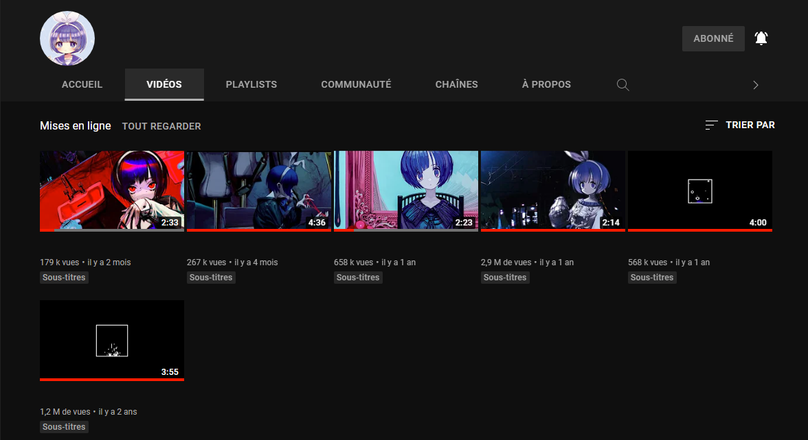

Une deuxième chaîne Youtube ?
Oui, x0o0x_ possède une deuxième chaîne Youtube sous le nom de XYXYZ qui consiste à reprendre c'est chanson originale mais de changer la voix par un vocaloid.
Les vocaloid qui sont souvent les plus utiliser son Hatsune Miku (初音ミク) et flower
